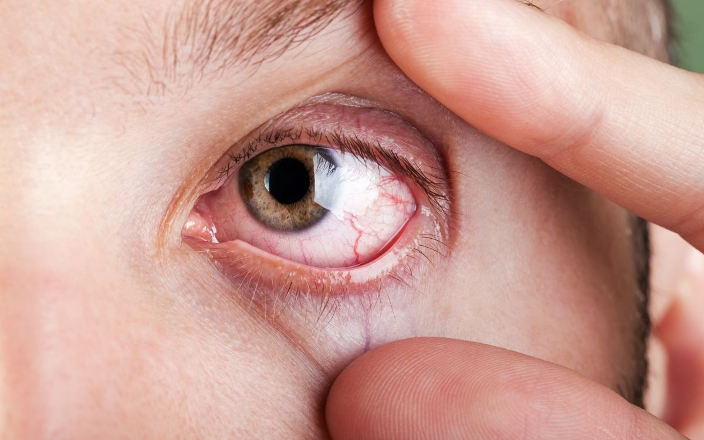
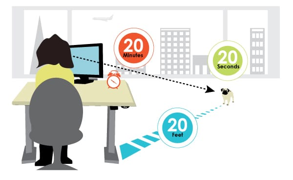
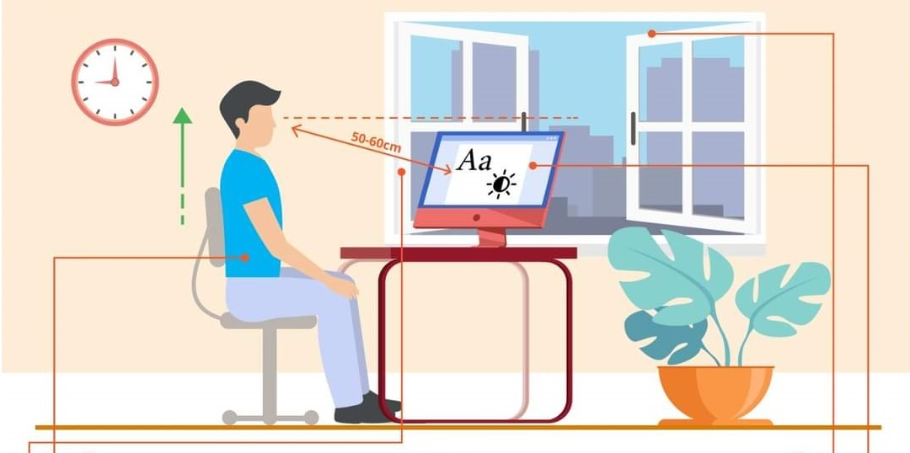

Riesgos derivados del trabajo prolongado con PVD (Pantallas de Visualización de Datos). La fatiga visual ocurre por el esfuerzo muscular del ojo ante enfoques prolongados.
El ojo se agota debido al enfoque constante a una distancia corta y fija en el entorno IT.

Molestias que afectan directamente al globo ocular y su hidratación natural.
Afectan a la calidad de la visión y la capacidad de enfoque tras la jornada.
Reflejos de la fatiga visual en otras partes del cuerpo debido al esfuerzo.

La medida preventiva más eficaz para aliviar el esfuerzo del músculo ciliar.

Configuración del puesto para minimizar el esfuerzo de acomodación ocular.